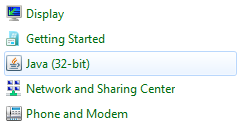
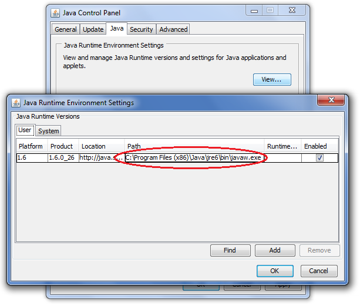
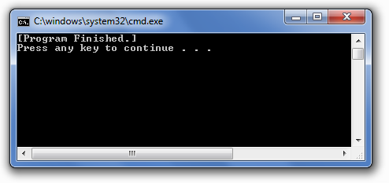
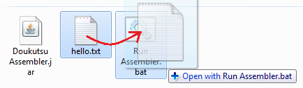
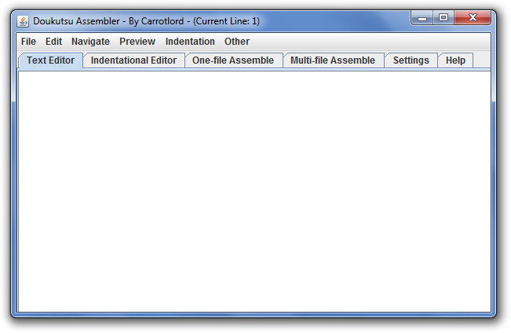

|
Finding Where Java Is Installed This should be easy. First, go to the control panel and click on Java. In control panel, don't use category view - use classic view on XP, which is the same as large icon or small icon view on Windows 7.  Now click on the 3rd tab that says "Java" and hit the "View" button. Look at the filepath.  In the picture, you can see that Java is installed in C:\Program Files (x86)\Java\jre6\bin\ If you have a 32-bit version of Windows, it's probably just C:\Program Files\Java\jre6\bin\. Running the Assembler from a Batch File Normally you can just run the Doukutsu Assembler by double-clicking on it, but running it from a batch file does have some benefits. We are now going to create this batch file, which should be a lot easier than using the Command Prompt to navigate and find the Assembler. Paste the following code into Notepad and save it as Run Assembler.bat. The green part is important: if your Java runtime environment is installed in a different folder, then please change the filepath to that different location. @echo off
setlocal
set path=%path%;C:\Program Files\Java\jre6\bin
java -jar "Doukutsu Assembler.jar"
echo [Program Finished.]
pause
endlocal
exit
Put the Run Assembler.bat file in the same folder as the Doukutsu Assembler. Double-click on the batch file and it'll run the Assembler. When you close the Assembler but not the command prompt window, you should see [Program Finished.]. There are many advantages to running from a batch file. If the program unexpectedly crashes without displaying a proper error box, you can see what went wrong inside the command prompt window. Also, if the program gets stuck in an infinite loop (which should hopefully never happen), you can close the command prompt window and it will shut down the Assembler immediately. Using Drag and Drop If you want to get the Assembler to open a file by drag-and-drop, you have to edit your previous batch file: @echo off
setlocal
set path=%path%;C:\Program Files\Java\jre6\bin
java -jar "Doukutsu Assembler.jar" %1
echo [Program Finished.]
pause
endlocal
exit
The only change we made was adding a %1 to the end of the 4th line. Now drag and drop a text file onto the batch file and the Doukutsu Assembler will automatically open the text file inside its editor. Changing the Theme In Windows, you can easily change the theme of the assembler. Go into the ProgramData folder and look for theme.ini. Open it and change the number 0 to the number 1. Save it. Now open the Doukutsu Assembler again. You will see that the appearance of the program has changed.  To go back to the original theme, change the contents of theme.ini from 1 to 0. Back to the Table of Contents |